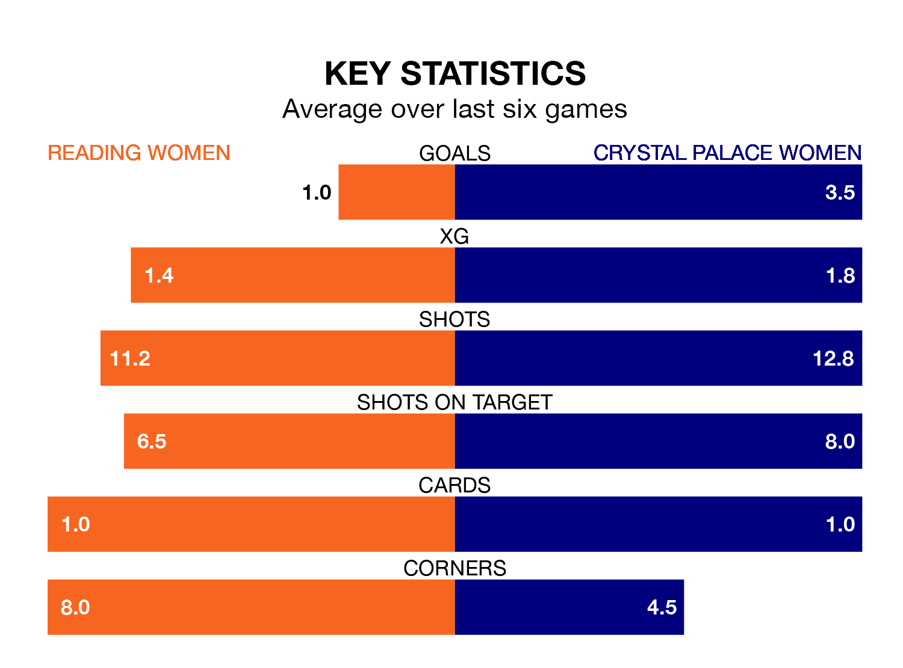

Struggling Reading Women face Crystal Palace Women at the Select Car Leasing Stadium on Sunday looking to build on a win in their last league outing.
After securing all three points with a 0-0 victory over Watford Women on November 12, the Royals sit 10th in the FA Women's Championship.
They travel to play a Crystal Palace side fourth in the standings, who lost in their last match, 4-3 against Southampton Women, on November 19.
With 34 goals in 10 games so far this season, Crystal Palace are the league's highest scorers with 3.4 goals per game. And they are conceding at an average rate, letting in 14 goals at a rate of 1.4 per game.
Reading, meanwhile, are below average scorers, with 0.9 goals per game, compared to a league average of 1.4. They have conceded 1.4 goals per game.
In Elise Hughes, the away team have the league's most on-form striker so far this season. She has notched 11 goals in 10 appearances.
The Royals' top scorers, with two goals each, are Freya Gregory and Tia Primmer.
The hosts are in mixed form in the FA Women's Championship, with two wins and a draw from their last six games.
With four wins and two losses over that period, Crystal Palace's form is better – they have taken 12 points from 18, compared to Reading's seven.
